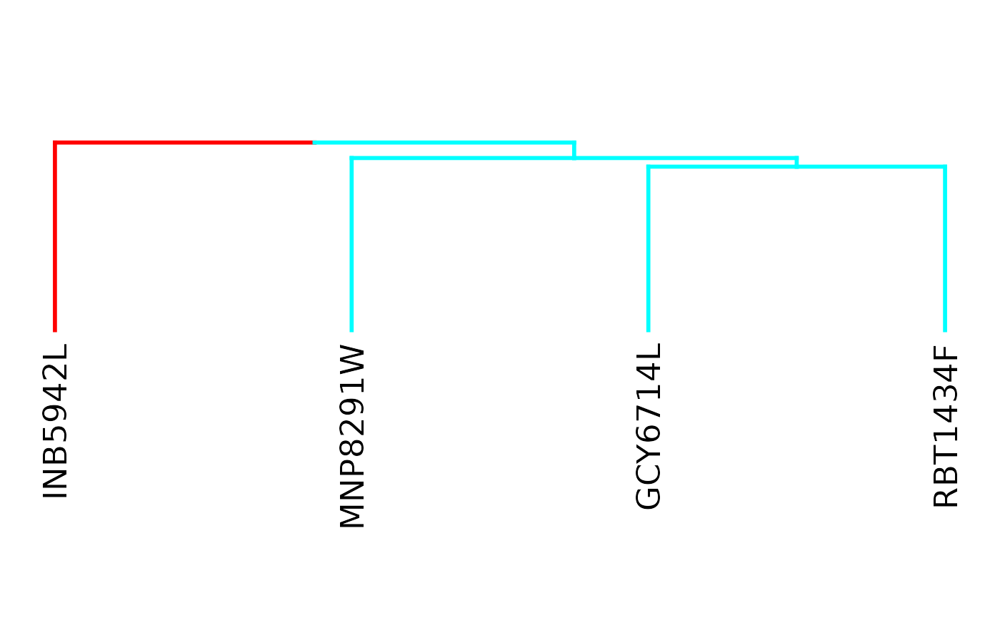
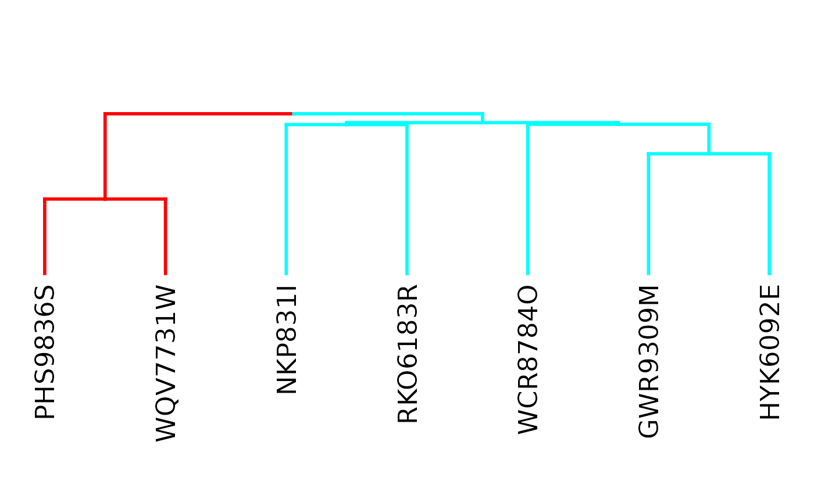

Calculates and returns functional groups based on
metabolic pathways. For
ConsortiumMetabolism objects, species are
clustered within a single consortium. For
ConsortiumMetabolismSet objects, the analysis
pools species across all consortia in the set,
identifying clusters of species with similar metabolic
capabilities regardless of which consortium they
belong to.
Usage
functionalGroups(object, ...)
# S4 method for class 'ConsortiumMetabolism'
functionalGroups(object, ...)
# S4 method for class 'ConsortiumMetabolismSet'
functionalGroups(object, ...)Arguments
- object
A
ConsortiumMetabolismorConsortiumMetabolismSetobject.- ...
Additional arguments passed to methods. Supported arguments include:
linkageCharacter scalar specifying the agglomeration method for hierarchical clustering. Passed to
hclustas themethodargument. One of"complete"(default),"average","single", or"ward.D2".
Value
A list (returned invisibly) containing:
dendrogram: The dendrogram object, orNULLwhen fewer than two species are available.similarity_matrix: Matrix of Jaccard similarities between species.incidence_matrix: Sparse binary species-by-pathway incidence matrix.reactions_per_species: Data frame mapping species to their pathways.
Details
This method computes a Jaccard similarity matrix
between species based on shared pathways, then
performs hierarchical clustering. A pathway is
represented as the unique (consumed, produced)
metabolite pair. To visualize the resulting
dendrogram, pass the output to
plotFunctionalGroups.
If a ConsortiumMetabolism contains fewer than
two species, a warning is emitted and the returned
list has dendrogram = NULL; the incidence
matrix and (trivial) similarity matrix are still
returned so downstream code can inspect them.
Functions
functionalGroups(ConsortiumMetabolism): Functional groups within a singleConsortiumMetabolism. Builds a species x pathway incidence from the consortium'sPathwaysslot (one pathway per unique(consumed, produced)pair) and clusters species by Jaccard similarity over their pathway sets. If the consortium contains fewer than two species, acli::cli_warnis emitted and the returned list hasdendrogram = NULL.functionalGroups(ConsortiumMetabolismSet): Functional groups across aConsortiumMetabolismSet. Pools species-pathway pairs from every consortium'sPathwaystable and clusters species by Jaccard similarity.
See also
plotFunctionalGroups for
visualizing the dendrogram.
Examples
## Single consortium
cm <- synCM("test", n_species = 4, max_met = 8)
fg_cm <- functionalGroups(cm)
plotFunctionalGroups(fg_cm, k = 2)
#> Loading required namespace: colorspace
#> Warning: Using `size` aesthetic for lines was deprecated in ggplot2 3.4.0.
#> ℹ Please use `linewidth` instead.
#> ℹ The deprecated feature was likely used in the dendextend package.
#> Please report the issue at <https://github.com/talgalili/dendextend/issues>.

## Set of consortia
cm1 <- synCM("comm_1", n_species = 3, max_met = 5)
cm2 <- synCM("comm_2", n_species = 4, max_met = 6)
cms <- ConsortiumMetabolismSet(
cm1, cm2, name = "test"
)
#>
#> ── Creating CMS "test" ─────────────────────────────────────────────────────────
#> ℹ Validating 2 <ConsortiumMetabolism> objects
#> ✔ Validating 2 <ConsortiumMetabolism> objects [11ms]
#>
#> ℹ Collecting metabolites from 2 consortia
#> ✔ Collecting metabolites from 2 consortia [36ms]
#>
#> ℹ Re-indexing 7 unique metabolites
#> ✔ Re-indexing 7 unique metabolites [47ms]
#>
#> ℹ Expanding 2 binary matrices to 7-dimensional space
#> ✔ Expanding 2 binary matrices to 7-dimensional space [25ms]
#>
#> ℹ Computing 7 x 7 levels matrix
#> ✔ Computing 7 x 7 levels matrix [25ms]
#>
#> ℹ Computing pairwise overlap (1 pairs via crossprod)
#> ✔ Computing pairwise overlap (1 pairs via crossprod) [22ms]
#>
#> ℹ Assembling pathway data from 2 consortia
#> ✔ Assembling pathway data from 2 consortia [26ms]
#>
#> ℹ Building dendrogram from 2 x 2 dissimilarity matrix
#> ✔ Building dendrogram from 2 x 2 dissimilarity matrix [18ms]
#>
#> ℹ Extracting dendrogram node positions
#> ✔ Extracting dendrogram node positions [20ms]
#>
#> ℹ Collecting 2 consortium graphs
#> CMS "test" created: 2 consortia, 7 metabolites (0.2s)
#> ✔ Collecting 2 consortium graphs [67ms]
#>
fg <- functionalGroups(cms)
plotFunctionalGroups(fg, k = 2)
#> Loading required namespace: colorspace
